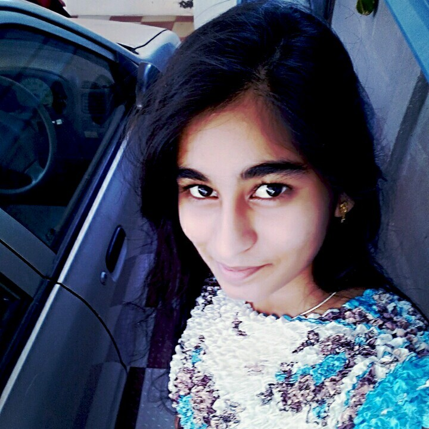

Resma C |
Motivated B.Tech student in Computer Science and Engineering (AI & DS) with strong fundamentals in programming, problem-solving, and data science. Seeking opportunities to apply technical knowledge through internships and projects while continuously learning emerging technologies.
10th Grade - SRVS National Higher Secondary School, Karaikal.
12th Grade - ONGC Public School, Karikal
BTech. Computer Science and Engineering(AI & DS) - SASTRA University, Tanjore.
Phone: 8838042759
Email: resmacanda12@gmail.com
Address:
83, Adhikesavan Nagar
Moolakulam
Pondicherry